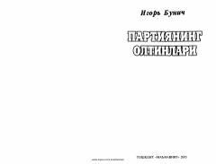

POSovet davri kommunistik partiya rahbarlarining boylik orttirishi va siyosiy munofiqliklari haqida tarixiy asar.
Ushbu asar sovet davri tarixidagi kommunistik partiya rahbarlarining xalq manfaatlariga zid ravishda boylik orttirishi va hokimiyatni suiiste'mol qilishi haqida hikoya qiladi. Muallif tarixiy dalillar asosida bolsheviklar tuzumining ichki ziddiyatlari va siyosiy munofiqliklarini fosh etadi.